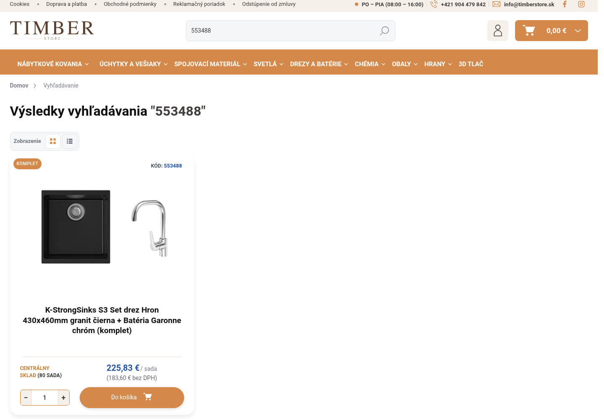
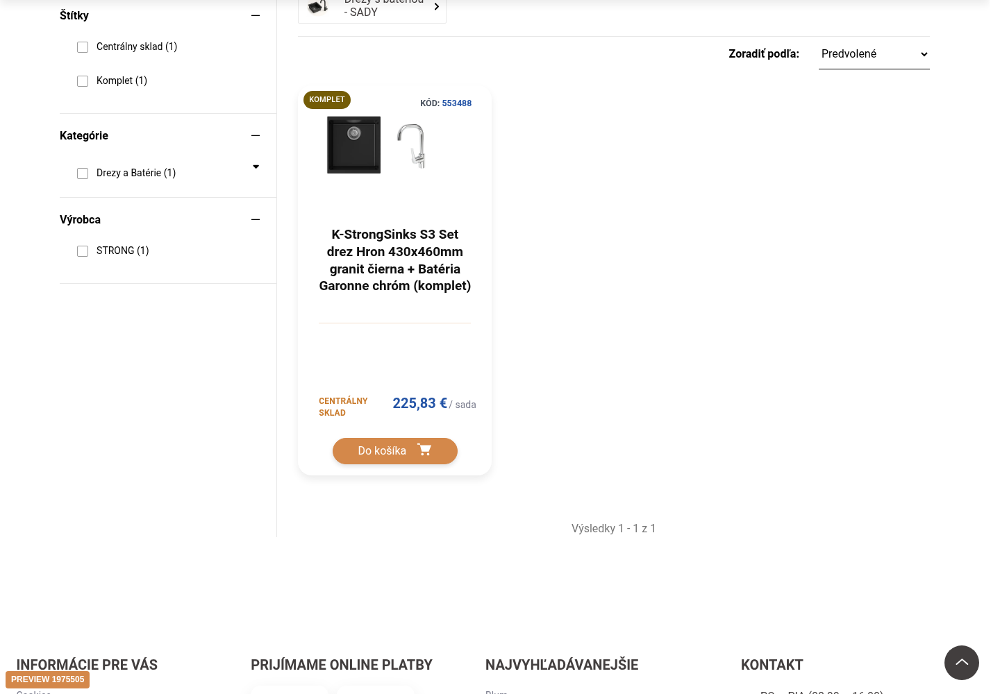
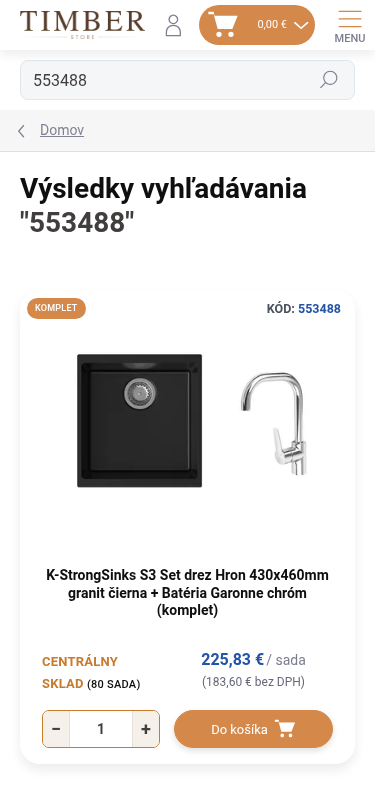
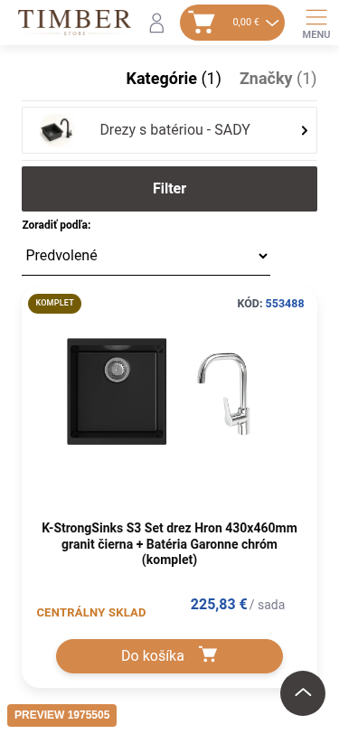
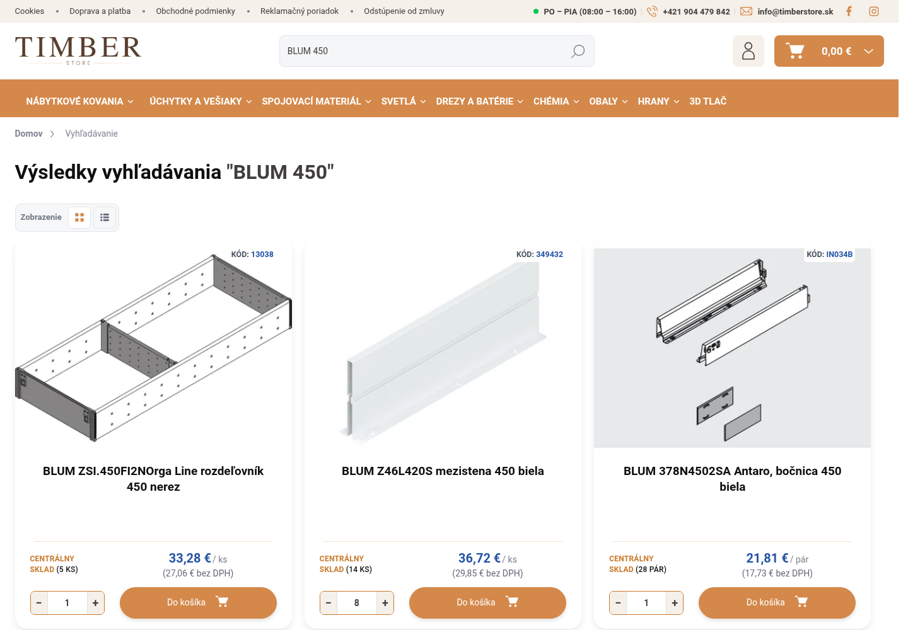
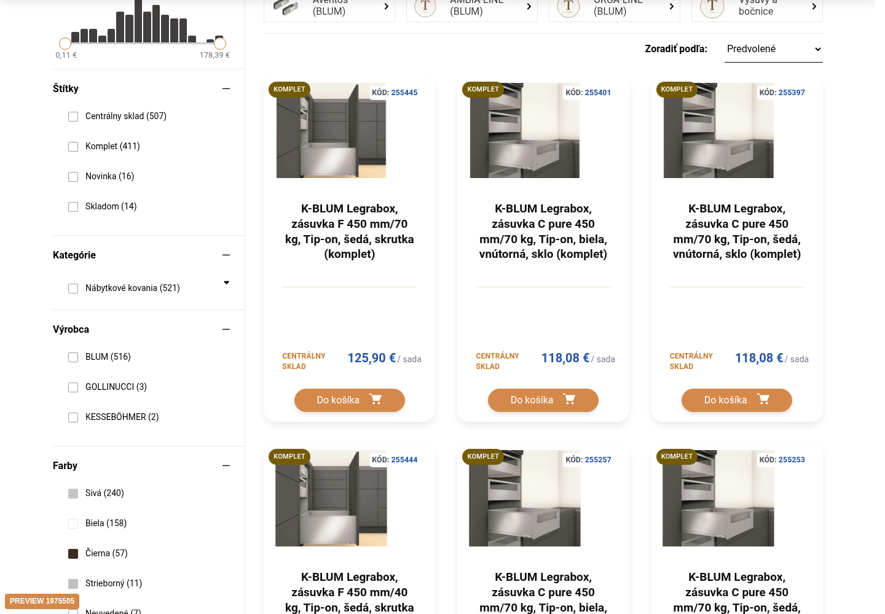
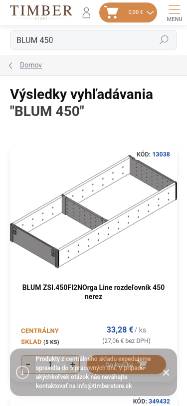
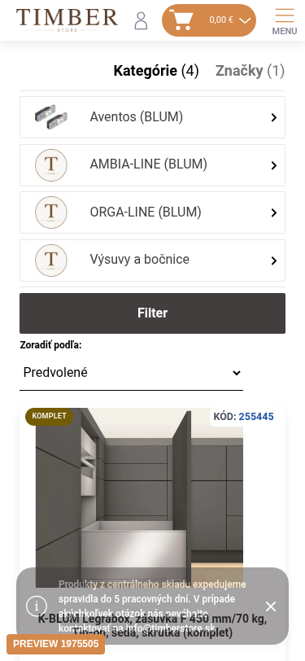

Aktuálny stav je FAIL/BLOCKED. Toto nie je opravený preview ani nový redizajn. Skutočný web, rovnaká SKU553488 alebo výrazBLUM450, oddelené browser kontexty, rovnaké viewporty. Natívny diagnostický kontext blokuje iba externý Luigi bootstrap, zachováva Shoptet HTML a natívne handlery. Produkčné nastavenia sa nemenili. Informačný oznam bol zatvorený jeho existujúcim ovládaním.
Technické rozhodnutie a plán · PASS/FAIL/BLOCKED · Pripravená požiadavka podpore








Natívny kategóriový filter (samostatná referencia, nie rovnaký Search dopyt): desktop · mobil.